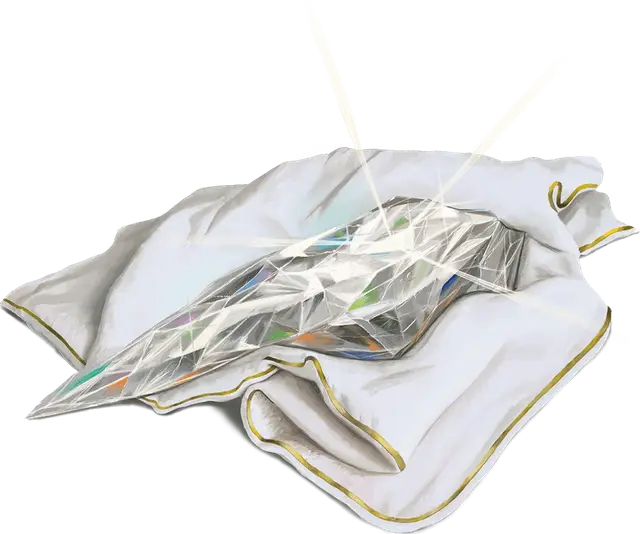

Камень сияния
Gem of Brightness
Чудесный предмет, необычный

Рекомендованная стоимость 400 зм
Эта призма имеет 50 зарядов. Пока вы её держите, вы можете действием Магия произнести одно из трёх командных слов, создавая один из следующих эффектов:
Первое командное слово. Призма излучает Яркий свет в радиусе 30 футов и Тусклый свет ещё на 30 футов. Этот эффект не тратит заряды. Он длится, пока вы Бонусным действием не повторите это командное слово, или пока не используете другую функцию камня.
Второе командное слово. Вы тратите 1 заряд, заставляя призму выпустить ослепительный луч света в одно существо, видимое вами в пределах 60 футов от вас. Существо должно преуспеть в спасброске Телосложения Сл 15, иначе получит состояние Ослеплённый на 1 минуту. Существо повторяет этот спасбросок в конце каждого своего хода, при успехе оканчивая на себе этот эффект.
Третье командное слово. Вы тратите 5 зарядов, заставляя призму вспыхнуть интенсивным светом в 30-футовом Конусе. Каждое существо в этом Конусе совершает спасбросок, как если бы в него был направлен луч, созданный вторым командным словом.
Когда все заряды этого камня потрачены, он становится немагическим драгоценным камнем стоимостью 50 ЗМ.